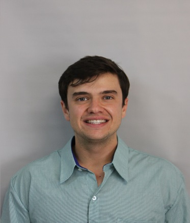
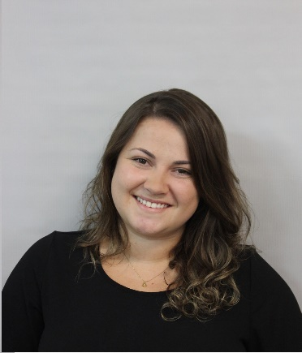
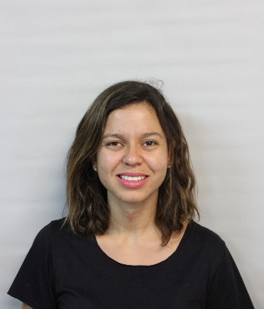
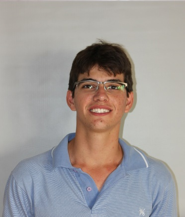

About Us

Our main activities are:
- Organization of scientific events;
- Promote discussions on relevant Genetic and Plant Breeding issues;
- Technical visits to companies and public research institutions;
- Promote the guidance of young talents under training from the “alumni voice”, in which the alumni with consolidated careers will share professional experiences;
- Promote interaction opportunities between students, professors and researchers outside the University;
- Partnerships with companies and public institutions.
Members
José Baldin Pinheiro
Associate Professor
Genetics and Plant Breeding
View Lattes

Filipe Inácio Matias
PhD candidate in Genetics and Plant Breeding
Polypoid Forage Breeding and Genetics
View Lattes

Renan Silva e Souza
PhD student in Genetics and Plant Breeding
Soybean Breeding
View Lattes

Alline Sekiya
PhD student in Genetics and Plant Breeding
Biotic Stress in Eucalyptus and Doubled Haploids in maize
View Lattes
Mariana Niederheitmann
PhD student in Genetics and Plant Breeding
Vegetable Breeding
View Lattes

Maiara de Oliveira
MSc student in Genetics and Plant Breeding
Soybean Breeding
View Lattes

Willian Giordani
PhD student in Genetics and Plant Breeding
Bean Breeding
View Lattes

Emanoel Sanches Martins
PhD student in Genetics and Plant Breeding
Quantitative Genetics - Soybean Breeding
View Lattes

Gabriel de Siqueira Gesteira
PhD student in Genetics and Plant Breeding
Quantitative Genetics and Plant Breeding
View Lattes

Pedro Augusto Medeiros Barbosa
PhD student Genetics and Plant Breeding
Quantitative genetics – Sugarcane and soybean breeding
View Lattes

Rafael Massahiro Yassue
MSc student in Plant Breeding and Genetics
Soybean Breeding
View Lattes

Carolina Hayashibara
PhD student in Genetics and Plant Breeding
Genetics of Microorganisms / Plant-microbe interactions
View Lattes

Jéssica Eliana Nogueira de Souza
PhD student in Genetics and Plant Breeding
Vegetable Breeding
View Lattes
Albania José Patiño Torres
PhD candidate in Genetics and Plant Breeding
Abiotic Stress in Solanaceae
View Lattes

Amanda Avelar
PhD candidate in Genetics and Plant Breeding
Quantitative Genetics - Genomic Selection
View Lattes

Elesandro Bornhofen
PhD candidate in Genetics and Plant Breeding
Soybean and Wheat Breeding
View Lattes

Fernando Henrique Correr
PhD candidate in Genetics and Plant Breeding
Bioinformatics
View Lattes
Guilherme Kenichi Hosaka
PhD candidate in Bioenergy
Bioinformatics
View Lattes

Gleicy Kelly de Oliveira
PhD student in Genetics and Plant Breeding
Plant Cytogenetics
View Lattes

Ana Letycia Basso Garcia
PhD student in Genetics and Plant Breeding
Bioinformatics applied to Bioenergy
View Lattes

Leonardo F. Gotardi
Undergraduate student in Agricultural Engineering
Abiotic Stress and Vegetable Breeding
View Lattes
Former Students

Danilo Hottis Lyra
PhD in Plant Breeding and Genetics
Maize Breeding
View Lattes
Iris Satie Hayashi Shimano
MSc student in Genetics and Plant Breeding
Plant Breeding and Genetic Resources
View Lattes

Gabriel Lourenço Lopes
MSc student in Genetics and Plant Breeding
Vegetable Breeding
View Lattes

Lucas Rabelo Campos
Undergraduate student in Agricultural Engineering
View Lattes